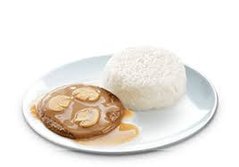

Jollibee


|
| Chicken Sandwich | 149 ₱ | A chicken sandwich is a sandwich that typically consists of boneless, skinless chicken breast or thigh, served between slices of bread, on a bun, or on a roll. | Chicken | 82 ₱ | Fried chicken, also known as Southern fried chicken, is a dish consisting of chicken pieces that have been coated with seasoned flour or batter and pan-fried, deep fried, pressure fried, or air fried. |
|
Spagethi | 59 ₱ | a long, thin, solid, cylindrical pasta. It is a staple food of traditional Italian cuisine. |
|
|
Fries | 48 ₱ | french fries, side dish or snack typically made from deep-fried potatoes that have been cut into various shapes, especially thin strips. |
| Yumburger | 40 ₱ | Your favorite beefiest langhap-sarap Yumburger, with beefy patty and our special dressing in between soft buns. | |
|  | Burger Steak | 59 ₱ | 1 piece of beef patty with flavorful mushroom gravy, topped with mushroom slices. Served with steamed rice. | Place Your Orders Here! |